| 日付 | 2014年7月26日（土） |
|---|---|
| 山域 | 奥秩父 |
| メンバー | 家族（妻、長女・3歳、長男・1歳） |
| 山行形態 | 子連れ日帰り |
| アクセス | 車 |
| ルート (Map) | 大弛峠 (9:16) - (10:36) 北奥千丈岳 (10:52) - (11:12) 国師ヶ岳 (11:58) - (12:49) 大弛峠 |
奥秩父主稜の未踏峰はだいぶ少なくなってきた。
今回はその中の国師ヶ岳と北奥千丈岳に行ってみることにする。
北奥千丈岳は奥秩父の最高峰で、標高は2600mを越える高峰なのだが、
なぜかマイナーな存在であり、国師ヶ岳の方が名が通っている。
今回はこの2峰を結んで歩いてみる。
大弛峠に到着。標高2360m。
来る途中で娘が車に酔って吐いてしまい、到着が遅くなってしまった。
もちろん駐車場はもう一杯で、僅かなスペースを見つけて車を停める。
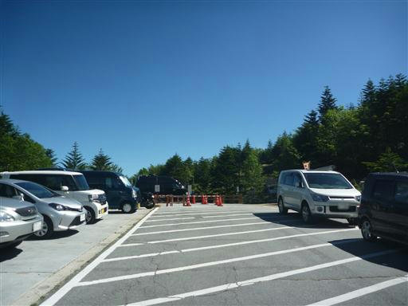
この大弛峠は以前、金峰山に登った時に来た場所だ。
ここから西に行けば金峰山、東に行けば国師ヶ岳だ。

峠の近くに、大弛小屋がある。
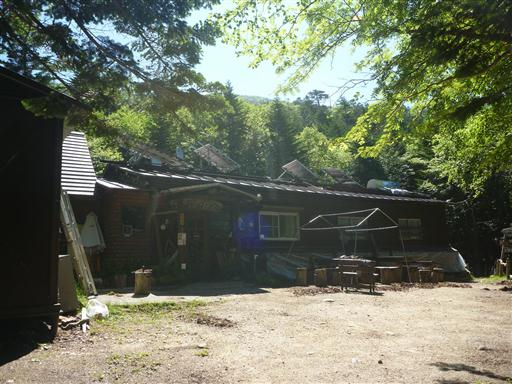
登山道はほとんど木の階段でできている。
娘は大きな段差を元気に登っていく。
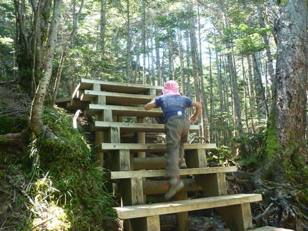
夢の庭園と呼ばれる場所に到着する。
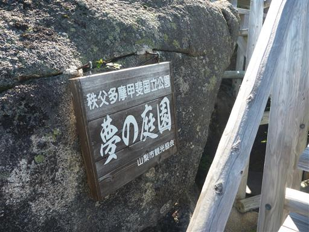
岩がちな地形の上に、階段が組まれている。
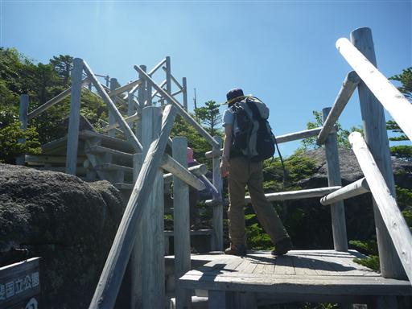
ここからは大きく展望が広がる。
見えているのは奥秩父主稜の山々、奥に金峰山の五丈石が見えている。
夢の庭園と呼ばれるだけのことはある、素晴らしい展望台だ。
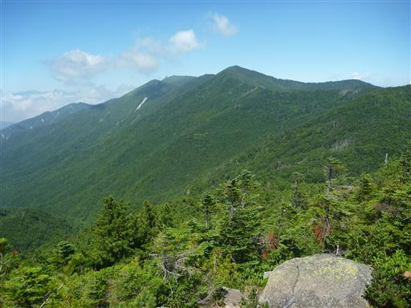
遠くには南アルプスの山々が連なっている。
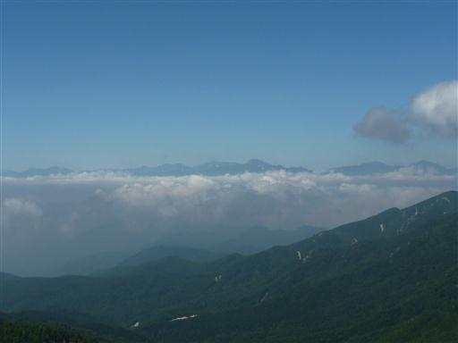
頭上は青空。見事な快晴だ。
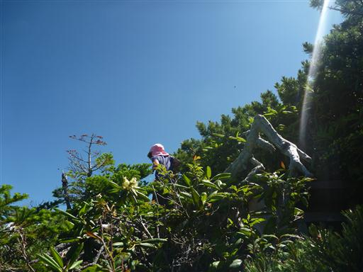
背後に見えるのは小川山。手前には白い岩が連なっているのが見える。
小川山は岩登りの山として有名だ。
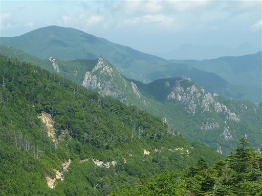
足元にハクサンシャクナゲが咲いている。
ここまできれいな状態で咲いているのを初めて見た。
思ったよりもきれいな花だ。
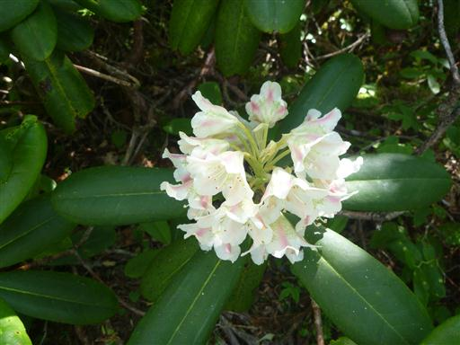
木道と階段がどこまでも続く。非常に良く整備されている。
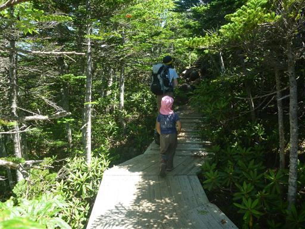
途中で木の道がなくなって、ようやく山っぽい道になる。
ここも段差が結構きつい。
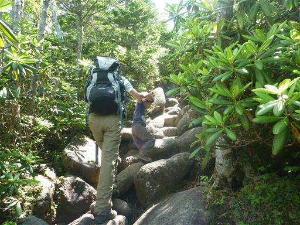
斜面を登りきると、岩が散在する平らな場所に出てくる。
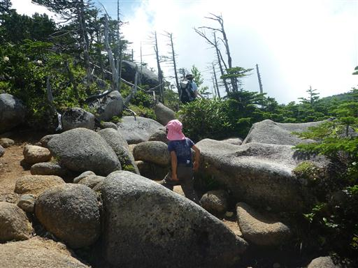
目の前に見えてきたのは北奥千丈岳。
どてっとした山容で、お世辞にも格好良いとは言えない。
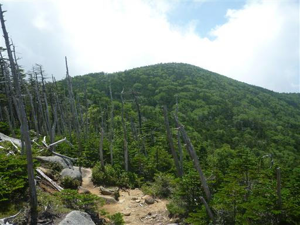
少し開けた場所に、前国師ヶ岳の標柱が立っている。
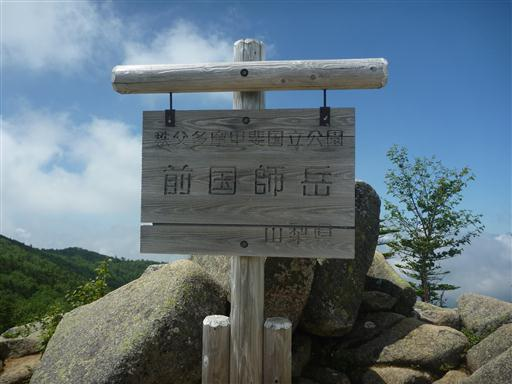
北奥千丈岳と国師ヶ岳との分岐点から、北奥千丈岳方面に向かう。
この辺りは高山帯でハイマツが広がっている。
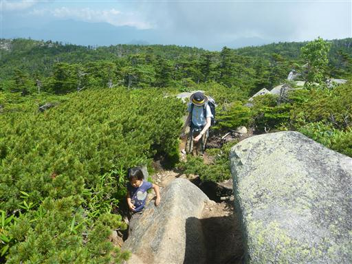
北奥千丈岳に到着。標高2601m。
思いの外、展望が開けていて、雰囲気の良い山頂だ。
標高も2600mを越え、非常に高い。3大アルプスを除けばこの標高を越える山は少ない。
この山はもっと評価されてよいと思う。
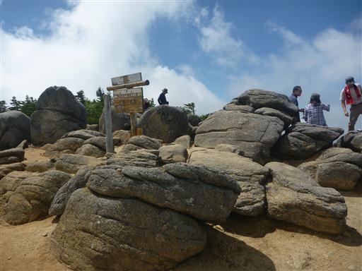
山頂標識から少し離れた場所に大きな岩がある。見渡したところ、この岩が一番標高が高そうだ。
この岩の上が2601mなのだろうか？
岩には裏側から回り込んで登ることができる。
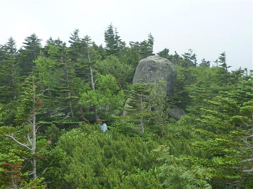
展望は開けているのだが、残念ながら雲が上がってきて、多くのものを隠し始めている。
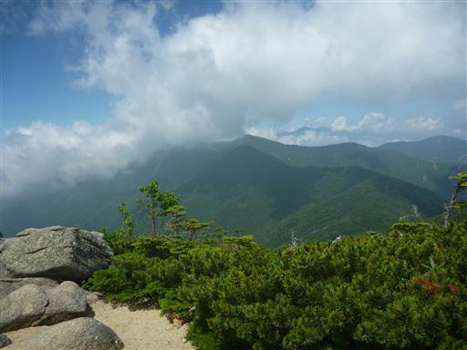
北奥千丈岳で少し休憩したら、すぐ近くにある国師ヶ岳に向かう。
オオシラビソが広がる森の中を歩いていく。
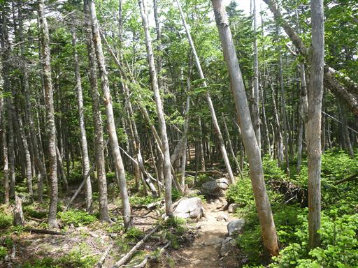
すぐに国師ヶ岳山頂に到着する。標高2592m。
こちらは山梨百名山に選ばれている。
北奥千丈岳とは300mも離れておらず、ほとんど1つの山と言ってよい。
南峰、北峰でもよかったと思うのだが、なぜ別々の名前を付けてしまったのだろう？
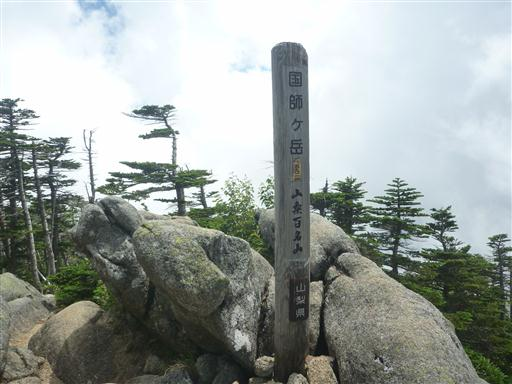
山頂に腰を下ろして昼食をとる。
太陽が雲に隠れると肌寒く、太陽が顔を出すと灼熱地獄だ。
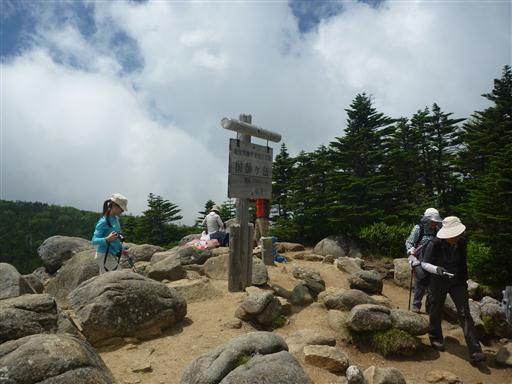
昼食をとったら山頂を後にする。
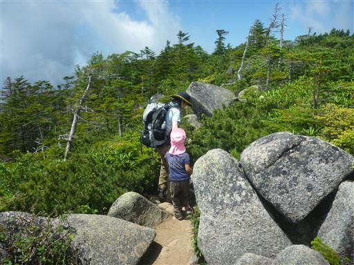
下りもひたすら階段だ。
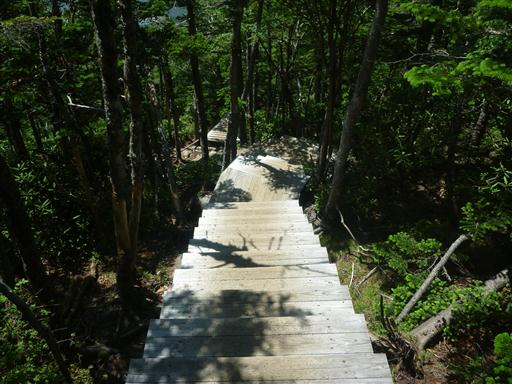
登りは簡単だが、下りは難しい…
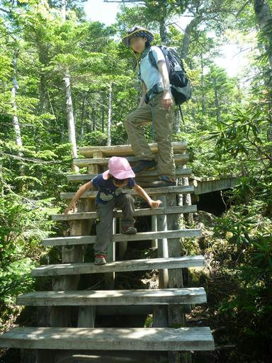
道が2手に分かれていて、登りは夢の庭園を経由したので、下りはもう一方の道を歩く。
何の変哲もない道で、登り下りとも夢の庭園を経由する方が良さそうだ。

大弛小屋まで下ってくる。小屋から出てきた話好きのおじさんと長話。
短い山行だったが、久しぶりに高山を登ることができた。
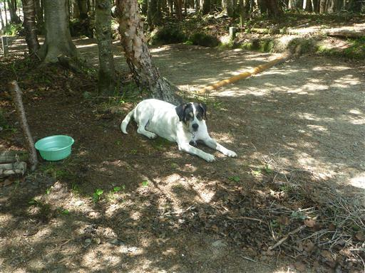